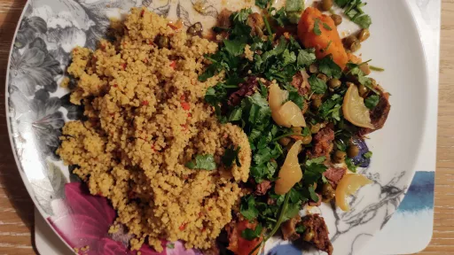

Beef tagine with sweet potatoes, peas, ginger and ras el hanout
1 hr 15 mins
Serves 4

This fairly fiery dish is laced with the powerful flavours and aromas of ras el hanout, a traditional spice mix.
Ingredients
2 tbsp ghee or olive oil
a large thumb-sized piece of fresh ginger, peeled and finely shredded
4 onion, finely chopped
4 kg lean beef, cubed
1-2 tsp ras el hanout
2 medium sweet potatoes, peeled and cubed
sea salt and freshly ground black pepper
500 g shelled fresh peas or frozen peas
2-3 tomatoes, skinned, deseeded and chopped
1 preserved lemon, finely shredded or chopped
a small bunch of fresh coriander leaves, finely chopped
Instructions
Heat the
ghee2 tbsp
in a tagine or a heavy-based casserole. Stir in the ginger and
onion4
and saute until soft. Toss in the
beef4 kg
and sear it on all sides, then stir in the
ras el hanout1-2 tsp
. Pour in enough water to just cover the meat mixture and bring It to the boil. Reduce the heat, cover with the lid and cook gently for about 40 minutes.
Add the
sweet potato2 medium
to the tagine, season with salt and pepper to taste, cover with the lid and cook gently for a further 20 minutes, until the meat is tender. Toss in the